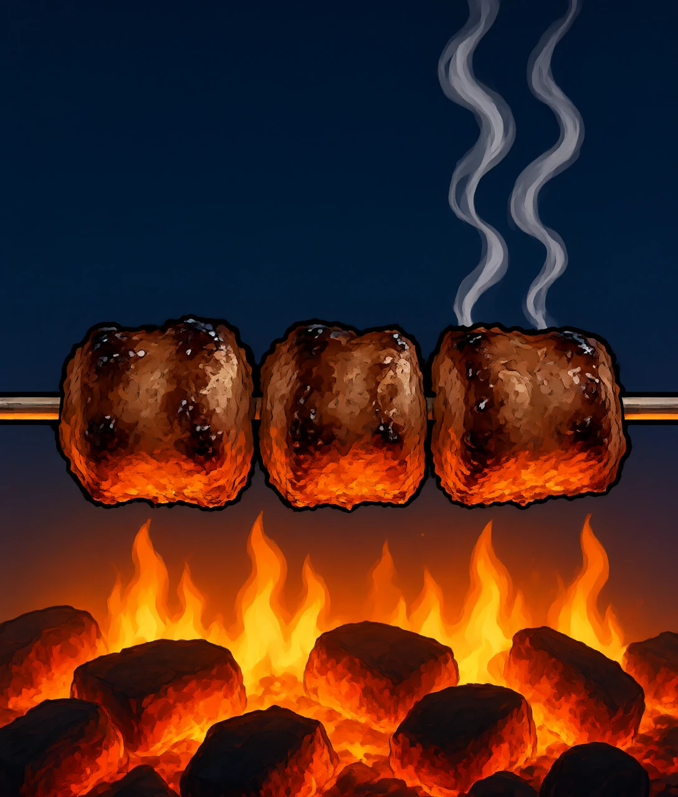
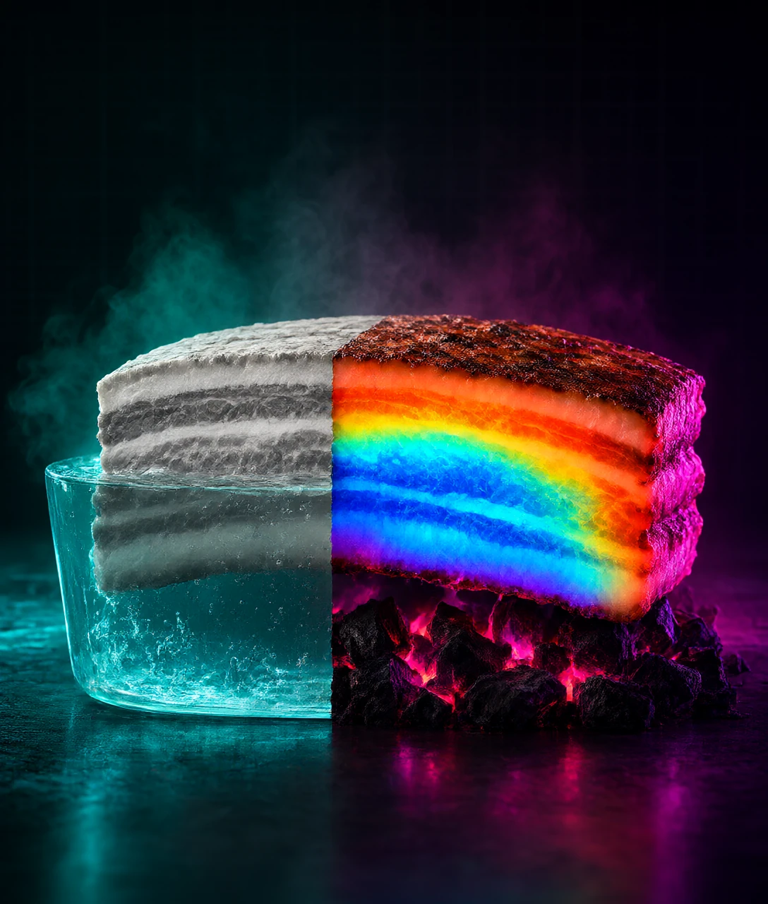
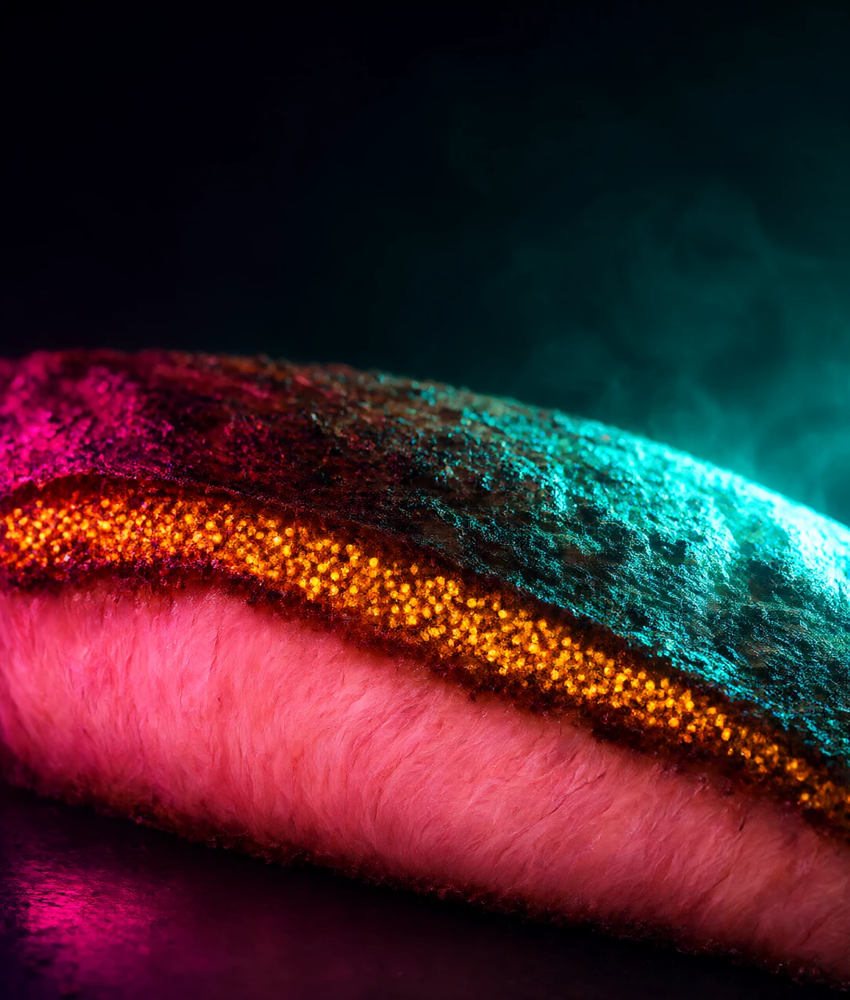
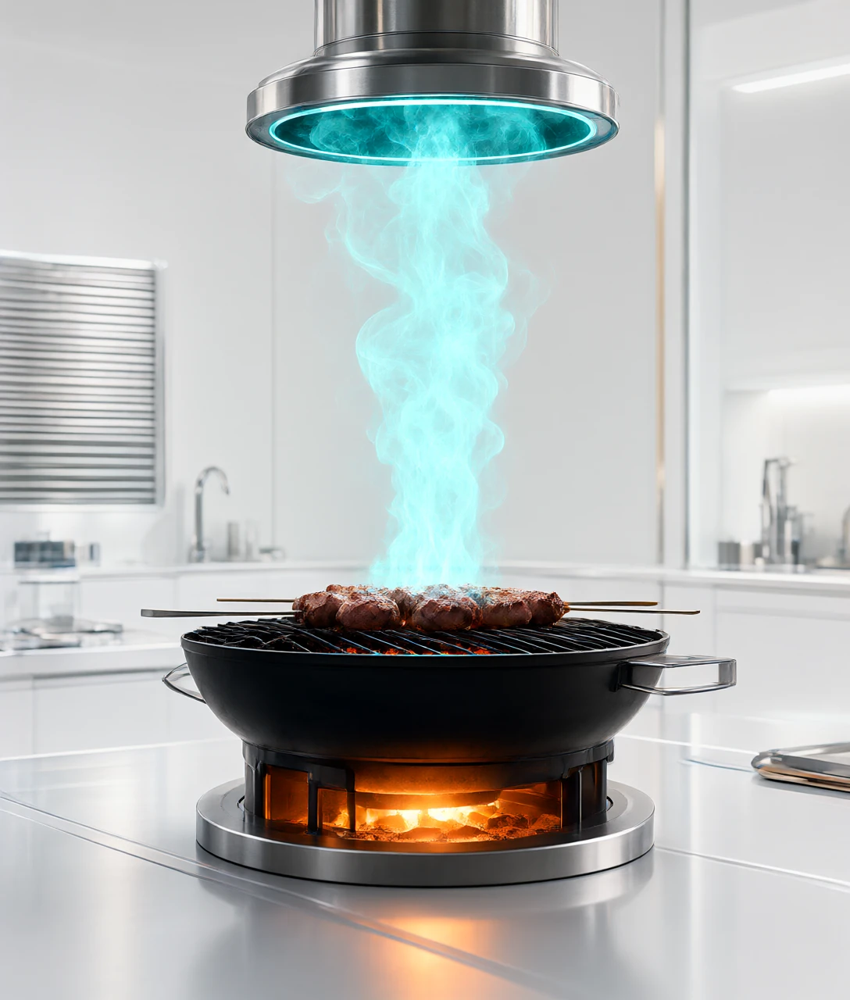
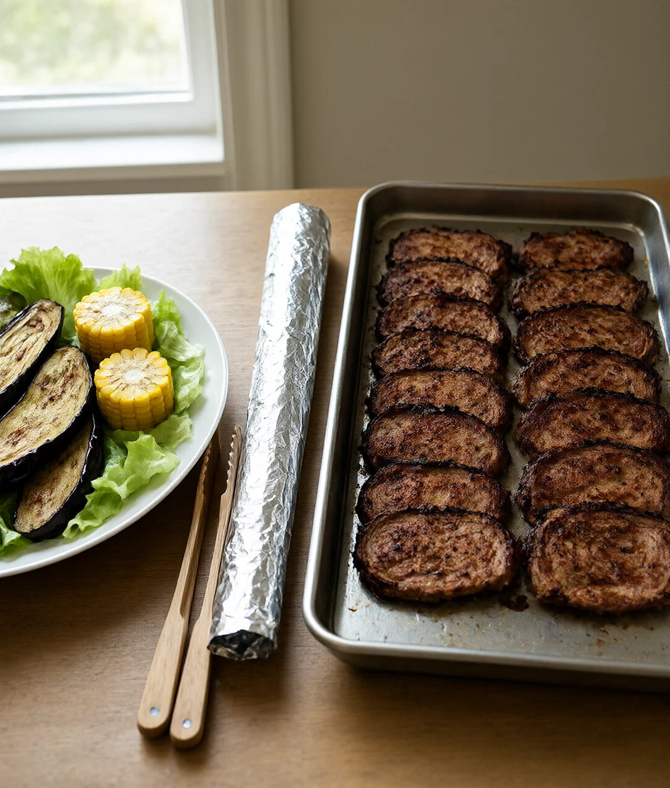

2015 年 10 月 26 日，一份报告把培根和香烟放进了同一格。当天全球头条都在问：还能吃吗。

2015 年 10 月 26 日，法国里昂。世界卫生组织下属的国际癌症研究机构发布了一份评估报告。
第二天，全球报纸用了同一类标题：培根和香烟同级。
火腿、培根、香肠被列进「1 类致癌物」。同一格里还有烟草、石棉和酒精饮料。消息传开，很多人第一反应是：那还能吃吗。
机构随后专门发了一份说明。里面有一句关键的话：分类说的是证据有多强，不是危险有多大。
这句话不太容易听懂。就像天气预报说「今天有大风」和「今天有台风」，都归进了大风这个词，破坏力却差着好几个等级。
同样在 1 类，抽一辈子烟和每天早上吃两片培根，代价完全不是一回事。
但报告里有一个数字，确实不太好受。每天吃 50 克加工肉，结直肠癌的风险比不吃的人高出 18%。
50 克，大约是一根半烤肠。这个 18% 到底意味着什么？它和周末那顿烧烤，又是什么关系？
要回答它，得从肉碰到火的那一刻说起。先看一件更基础的事：为什么烤过的肉那么香，水煮的就不香？
把一块五花肉放进清水里煮。半小时后捞出来，肉是灰白色的，闻着有点腥。
同一块肉放到炭火上。几十秒，表面就变褐。再一会儿，边卷起来，香味冲出来。
差别卡在一个温度门槛上。
水在常压下烧开是 100 ℃，之后温度就不再往上涨。烤架上的肉，表面能到 150 ℃、200 ℃，甚至更高。
过了这个门槛，肉里的氨基酸和糖会撞在一起，生成几百种新分子。这套反应叫美拉德反应，就是让食物变褐、变香的那一串化学反应。
氨基酸，就是蛋白质拆开之后的小段。糖不一定是甜的那种，肉里本来也有。
这些新分子里有吡嗪、呋喃这类东西。名字不好记，作用是让鼻子闻到那股焦香。
换算一下：140 ℃ 到 165 ℃ 之间，这套反应跑得最快。低于这个区间，慢到你看不出来。
这就解释了一个日常现象。不管灶上火烧得多旺，锅里的水最多只有 100 ℃。就像烧开水冲茶，水再滚也不会更烫。
所以水煮的肉，温度被水锁在 100 ℃ 以下。要让它变香，只能把水赶走，让温度冲过 140 ℃。这就是煎、烤、炸的意义。
同一套反应在别处也在跑：面包皮、咖啡豆、煎饺底面、烤鸭的脆皮。都是褐色的，都在 140 ℃ 以上。
问题是，这套反应不只生产香味。它还顺手产生了另一样东西。

200 ℃ 的烤架上，肉的变化不止在表面。
肉里有肌酸，就是肌肉用来存能量的那种小分子。它和氨基酸、糖一起，在 150 ℃ 以上会生成另一类分子：杂环胺。
杂环胺这个名字听着陌生，指的是十几个结构相近的化合物。它们最集中在肉的表面，也就是那层焦壳里。
生成量跟三件事有关：温度、时间、翻面。
温度上，150 ℃ 以下几乎不生成。200 ℃ 以上，数量级地往上翻。
就像煎鸡蛋。油温不够时，蛋白半天不焦。一过那个温度，几秒钟就围出一圈褐边。
时间上，同样是 200 ℃，烤 10 分钟和烤 4 分钟差得很远。
翻面最容易被忽略。一面烤到底，那面会一直升温。每分钟翻一次，表面温度来不及冲上去。
有实验做过直接对比：把肉先放进微波炉转 2 分钟，倒掉流出来的汁，再上烤架。杂环胺少了大约九成。
道理不复杂。微波炉把肉从里到外加热到半熟，烤架上只需要几十秒上色。高温总时长砍掉大半，生成量跟着掉。
反过来，最容易出事的是冷冻的肉直接上架。外面已经焦了，里面还是冰的。为了让中间熟，你只能接着烤，外面就一直烧着。
这里有个容易混的地方。焦得发黑的那一块，苦味不是「更香」，是碳化了。碳本身没有风味，只有苦和涩。
那烤鱼、烤鸡翅是不是更安全？不一定。杂环胺的前体是肌酸，凡是肌肉都含，鱼和鸡一样跑不掉。
上面这些，都还发生在肉自己身上。那么，从炭火上飘起来的那股烟，又是另一回事吗？

把镜头拉远一点，看整个烤架。
肉的脂肪在高温下化成油，一滴一滴掉下去。油落在炭上，啪一声，冒起一股白烟。
这股烟往上走，正对着肉。烟里的颗粒会粘在表面，一层一层叠上去。
这些颗粒里有一类物质叫多环芳烃。其中最出名的一个是苯并芘，属于 1 类致癌物。
跟杂环胺不同，多环芳烃不是肉自己造的。它是油脂燃烧不完全的产物，从外面落到肉上。
所以它跟「肉有多焦」关系不大，跟「有没有烟往上熏」关系很大。好比站在下风口，别人抽烟你也躲不开。
同一块肉，架在炭火上直烤，和用锡纸包起来烤，前者表面的苯并芘可能高出一个数量级。
还有第三条路，它出现在烤肉店的菜单上。
培根卷金针菇、香肠、火腿片。这些是加工肉，里面加了亚硝酸盐。亚硝酸盐本身没那么可怕，它的作用是挡住肉毒杆菌，那是真能要命的东西。
但亚硝酸盐遇到肉里的胺类，在高温下会生成亚硝胺。亚硝胺是明确致癌的。
一个日常对照：家里的剩菜放冰箱，第二天再热，亚硝酸盐也会升高一点。但正常饮食那个量，跟长期大量吃加工肉不在一个量级。
三条路就这样叠在同一块肉上。一条在肉里，是杂环胺。一条从天而降，是多环芳烃。一条出在配料上，是亚硝胺。
那么回到最要紧的那个问题：18% 到底该怎么理解？

先说这个数字怎么算出来的。
「风险高出 18%」是相对风险。它比的不是「吃的人里有多少得癌」，而是「吃的人比不吃的人多出几成」。
看绝对值。在多数国家，一个人一生中得结直肠癌的概率大约是 5% 到 6%。
在这个基础上加 18%，变成 6% 到 7%。也就是说，100 个人里从 5 个变成 6 个。
这就像天气预报说降雨概率 30%。意思是十次这样的天气里，大约三次下雨，不是今天一定下。
不是翻倍，不是必然，更不是「吃了就完了」。
而且这 50 克说的是每天，是长年的习惯。不是周末那一顿。
这里要交代一句不确定。这些数字主要来自流行病学调查，也就是长期追踪一大群人的饮食和健康记录。调查能看出关联，但很难把烤肉从其他生活习惯里单独摘干净。杂环胺在人身上的剂量关系，目前还没有定论。烤到几分焦才算多，学界也没有一条公认的界线。
更麻烦的是，风险从来不是一个数，是一串条件。
同样是 50 克，天天吃和一年吃三次不一样。明火直烤和烤箱烤不一样。配一大盘蔬菜和配一瓶啤酒，也不一样。
蔬菜里的膳食纤维能加快肠道排空，缩短有害物质贴着肠壁的时间。这个观察在多项研究里重复出现过。
那具体怎么办？下面几条都有实验支撑，不是猜的。
把肉切小、切薄，缩短烤的时间。提前用微波炉预煮两分钟，把汁水倒掉。烤的时候勤翻面，别让一面一直贴着高温。
用锡纸包着烤，或者垫烤盘，别让油滴到炭上。腌一下再烤，红酒、啤酒、柠檬汁、大蒜、迷迭香都有人试过，杂环胺能降四成到九成。
配蔬菜和水果一起吃。最后一件事最容易被忽略：焦黑的那一块别吃，它的主要成分就是碳。
有人会问，那是不是干脆别吃烧烤。从营养看，烤肉的蛋白质和铁跟炖肉差不了多少。风险集中在焦壳和那股烟上，把这两样管住，一顿烧烤的代价就小很多。
真正要留意的，是「每天」这两个字。偶尔一顿和天天一顿，中间隔着一整个数量级。
还有一个没解决的问题。为什么有人抽一辈子烟没事，有人不抽烟也得肺癌？个体差异在癌症里占多大比重，现在依然是开放问题。饮食只是其中一项，不是全部。
想再往下看，可以去查那份报告的原文，也就是国际癌症研究机构的专著第 114 卷。

水煮的肉为什么不香，而烤的肉很香？
B 解析：变香那套反应要 140 ℃ 以上才跑起来。常压下水的温度被锁在 100 ℃，锅再大火也上不去。
杂环胺最集中在肉的哪个部分？
D 解析：肌酸、氨基酸和糖的反应发生在受热最强的表面，所以焦壳里最多，中心反而少。
苯并芘主要是怎么跑到肉上去的？
A 解析：脂肪滴在热源上不完全燃烧，烟里的颗粒往上飘，粘在肉的表面。用锡纸包住就断掉这条路。
「1 类致癌物」这个分类说明什么？
C 解析：分类只衡量证据强度，不衡量危险大小。同组里既有烟草，也有晒多太阳和咸鱼。
下面哪种做法能明显减少杂环胺？
B 解析：预煮让肉半熟，上架只要几十秒上色，高温总时长大幅缩短，实验里能降到原来的十分之一左右。